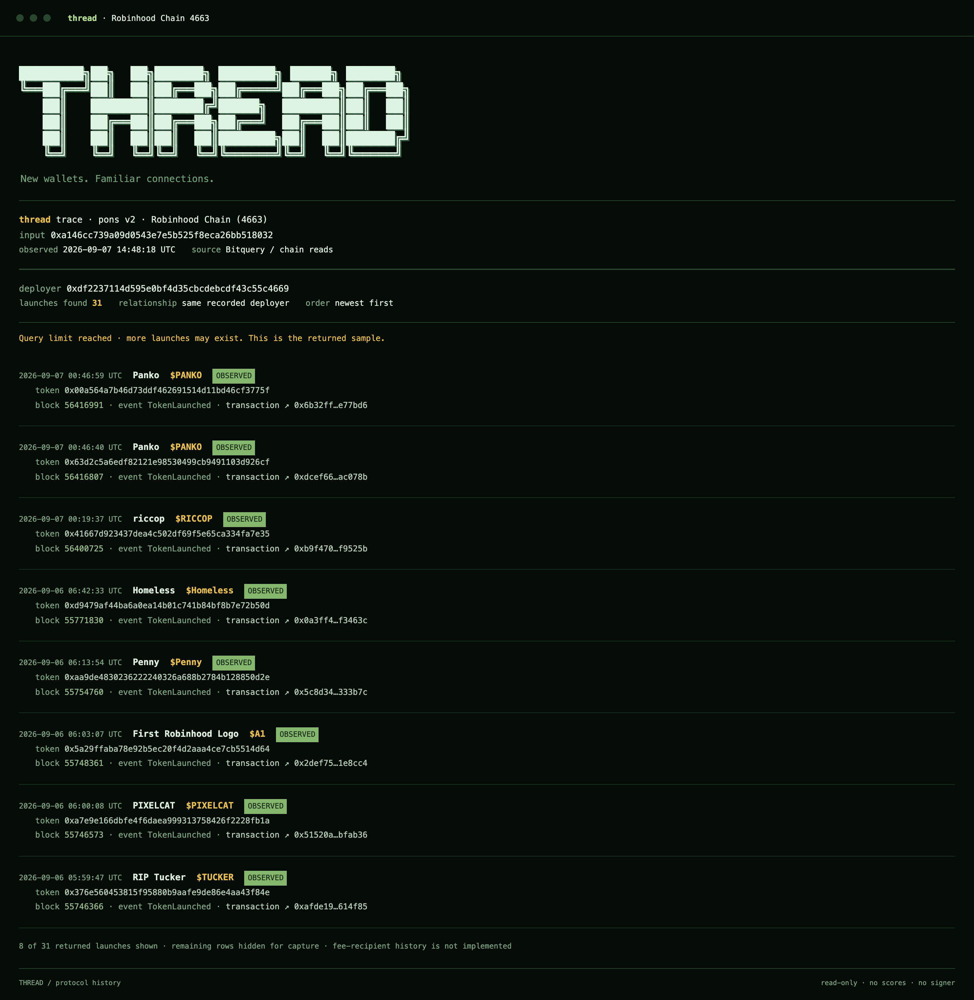

What others read
This contract. This curve. This moment. Then the answer is thrown away.
thread reads a Pons v2 launch and tells you what else the same deployer has shipped — named, dated, and linked to the transaction. No score. No verdict. Just what the chain already recorded and nobody was keeping.
Every tool in this space answers the same question: what is this token, right now. Curve, tax, liquidity, holder spread. All of it about one launch, in isolation, as if it arrived from nowhere.
But two facts already sit in Pons v2's own contracts and nobody keeps them. The factory records who deployed each token. The fee escrow records who actually gets paid on it. Neither needs guessing at wallet ownership across the wider chain, and both compound: the tenth launch by an address you have already seen is a fact, not an inference.
This contract. This curve. This moment. Then the answer is thrown away.
The same deployer's other launches, each with the block and transaction that proves it.
Score, rank, or tell you a token is safe. It hands you receipts and stops.
Before writing any indexing code, the premise had to be checked: do deployers on Pons v2 repeat at all? A sample of 300 consecutive real launches answered it — 275 unique deployers, 12 repeats. The biggest had eight launches and looked exactly like a token farm.
It is Multicall3: a generic batching contract deployed at the same address on nearly every EVM
chain. Launches routed through it record the batcher as msg.sender, so eight unrelated
people collapse into one apparent deployer.
Shipped naively, that would have been thread's own first output, and it would have been false. So every deployer is checked against a list of known shared infrastructure before anything is shown, and each entry on that list carries the evidence that put it there.
You do not have to take that on faith. No API key, about a second:
$ python3 analysis/verify_infra.py 0xca11bde05977b3631167028862be2a173976ca11 3808 bytes of deployed code — a genuine contract known selectors present: 0x4d2301cc getEthBalance(address) — Multicall3 0xa8b0574e getBasefee() — Multicall3 0x252dba42 aggregate((address,bytes)[]) — Multicall 0x82ad56cb aggregate3((...)[]) — Multicall3 Two or more Multicall selectors: this is a batching contract. Launches crediting it as deployer are unrelated callers sharing a router.
The next four repeaters were a different story: distinct EIP-7702 delegated accounts, real people using account abstraction. Those stayed.

This is the distinction most tools quietly collapse, and it is the difference between "this address is clean" and "ask me again later." thread keeps them apart on purpose.
| answer | what it means | how it is earned |
|---|---|---|
| resolved | here is the deployer and their launches | either data source returned real data |
| partial | deployer confirmed, launch list incomplete | a confirmed fact survived a later query failing |
| not-found | not a Pons v2 launch | the chain was asked directly and came back clean and empty, in both argument positions |
| inconclusive | nobody could tell us | both sources failed — never upgraded to a negative |
The indexer this runs on was observed timing out on genuine zero-match queries rather than returning an empty list. A timeout and an absence look identical from the outside, so a timeout alone can never produce a negative here. The chain has to be asked directly, and it has to answer.
The full seven rules live in RULES.md, in the repository, in plain text. Rule 4 is the one
most likely to be tempting to bend for a punchier post. It does not get bent.
| contract | address |
|---|---|
| PonsV2LaunchFactory | 0x7ed598bcef8bd9edd8c97a195c6d13f40801ec7e |
| PonsV2LaunchAndBuy | 0xe33e9e479df8802cb0866d5d05258bec4cf62948 |
| PonsV2MemeHook | 0xe5e702641ea86f4ae6cc3cdaed2b886f976be044 |
| locker | 0x267444d099b10fb5ed7c3cc7b7c767adca574952 |
| public RPC | rpc.mainnet.chain.robinhood.com |
The live numbers at the top of this page are read from that RPC by your own browser, right now. No key, no backend, nothing cached — the same endpoint the tool uses.
$ git clone https://github.com/dunik77/thread && cd thread $ npm test # 55 checks, offline, no key needed # deployer history needs a free Bitquery token $ cp .env.example .env # then paste your token in $ npm run serve # → http://localhost:4663
The ERC-20 reader needs no key at all and opens straight from disk. The token is only required for deployer history, and it lives in the server process — never in a page, because a key in a static page is a key anyone can read out of view-source.